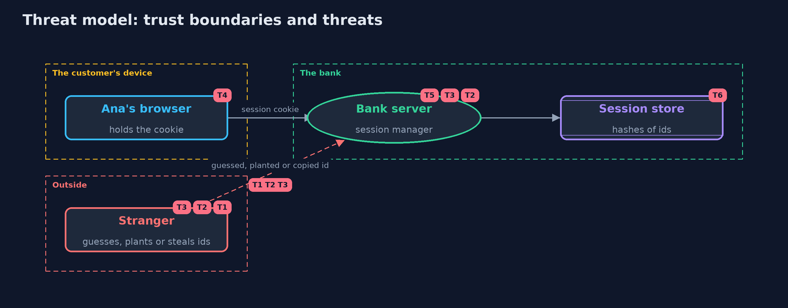

Threat Model — Session Management: Ids, Rotation, Timeouts and Sign-Out
A threat model answers four questions: what are we protecting, who or what could harm it, how, and what do we do about it. This one covers this project's own demo system, not a production deployment. Domain: an online bank.
Scope
An online bank's session management: making, storing and checking session ids, rotation at sign-in and step-up, timeouts, sign-out and revocation, and the session cookie. It does not cover how the password is checked beyond a salted hash, multi-factor authentication, or the transport, which is assumed to be HTTPS in production.
What we protect (assets)
- Live session ids, each as good as the customer's password while it lives.
- The session store.
- The customer's account and payments.
Who and what acts on the system
- Ana, the customer.
- A stranger who guesses, plants or copies session ids.
- Someone who obtains a copy of the session store.
Trust boundaries
A trust boundary is a line that data or a request crosses between parts that trust each other differently. Threats cluster where those lines are.
- Browser to bank: every request carries an id that must be checked.
- Bank to session store: only hashes of ids cross it.

Each dashed box is a trust boundary. A rose tag such as T1 shows where the threat of that number, in the table below, applies.
Threats, using STRIDE
STRIDE is a checklist of six kinds of threat: Spoofing (S), Tampering (T), Repudiation (R), Information disclosure (I), Denial of service (D), Elevation of privilege (E).
| Id | Kind | Threat | Where it shows up | Control in this project | What is left |
|---|---|---|---|---|---|
| T1 | Spoofing | A session id is guessed | SessionIds.newId |
128 bits from SecureRandom, with nothing from the user or the time | None that is practical, as long as the random source is a secure one |
| T2 | Spoofing | A stranger plants a known id before the customer signs in (session fixation) | SessionManager.signIn, SessionManager.stepUp |
A new id at every sign-in and step-up; the earlier id is removed | A framework setting that turns rotation off brings the threat back, so it is tested |
| T3 | Elevation of privilege | A copied or stolen id keeps working long after it was taken | SessionManager.check, SessionManager.signOut |
Idle and absolute timeouts, sign-out on the server, sign-out everywhere and revocation on a password change | A stolen id works until one of these ends it, so payments ask for the password again |
| T4 | Information disclosure | The cookie is read by a script or sent over plain HTTP | Cookies.sessionCookie |
Secure, HttpOnly, SameSite=Strict and the __Host- prefix | Malware on the customer's device can still read cookies |
| T5 | Denial of service | Unlimited sessions per customer, or sessions that never end, fill the store | SessionManager.enforceLimit, Settings |
A limit of three sessions per customer, and timeouts that delete expired sessions | Visitor sessions need their own limits and cleanup in a real store |
| T6 | Information disclosure | A copy of the session store gives live sessions | SessionStore |
Only the SHA-256 of each id is stored, and lookups compare in constant time | The store still reveals who is signed in and when, so it is protected like other customer data |
Assumptions
- The connection is HTTPS in production, so the Secure cookie is never sent in the clear.
- The clock is trustworthy; in the demo it is simulated.
- In the demo, the password is a demo value and sessions are kept in memory.
Out of scope
- Stealing the cookie through script injection: HttpOnly limits it, and the cross-site-scripting project covers the cause.
- Requests forged from other sites: the cross-site-request-forgery project.
- Shared session stores: the -with-spring-session-and-redis version.
How the tests check this
SessionIdsTestchecks the length and alphabet of ids, that many are distinct, SHA-256 against FIPS 180-2, and that the store holds no live ids.SessionManagerTestchecks rotation, fixation without it, step-up, both timeouts, re-authentication, sign-out, everywhere, password change, the limit and shared stores.CookieAndServerTestchecks the cookie's attributes and the real local server's sign-in, sign-out and rotation.DemoRunsTestcompares the whole demo with the golden output.
Where this model goes next
The next projects in api-security look at cross-origin access and the rest of an API's surface: request and response shapes and rate limits.